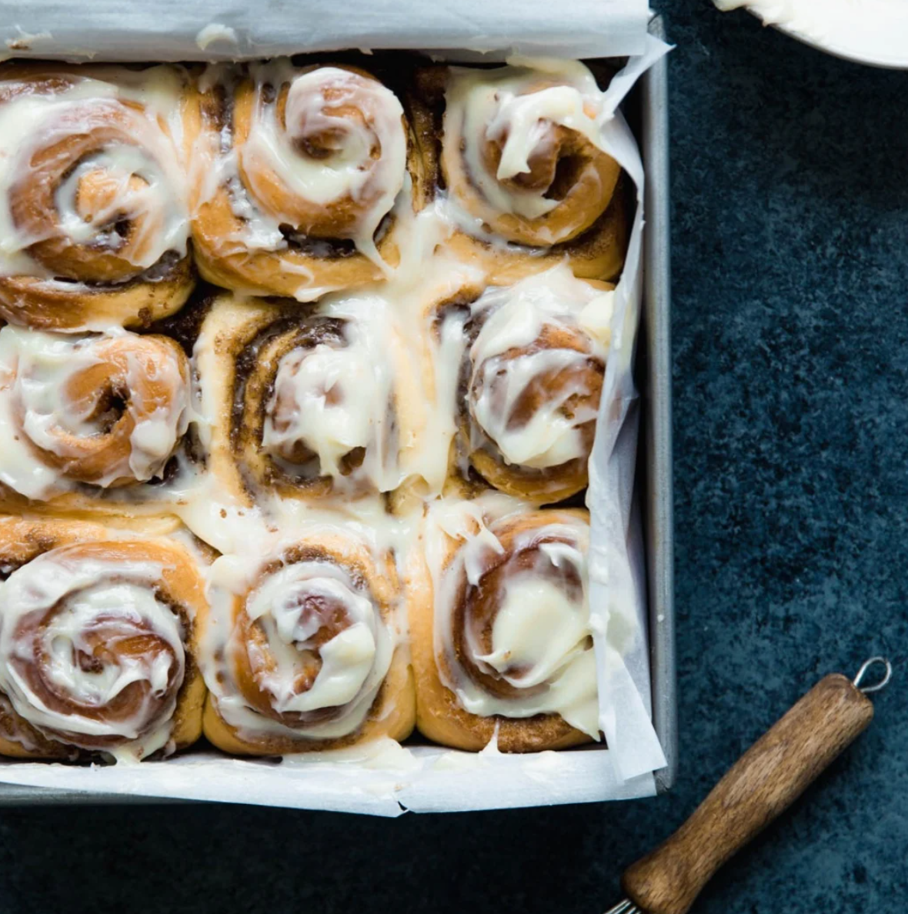

Home
Cinnamon Buns

Description
These are the best cinnamon buns in the world! Big, fluffy, soft and absolutely delicious.
You'll never go back to any other recipe once you try this one!
Ingredients
For the Dough
- 1 cup Warm milk
- 2 1/2 tsp Instant dry yeast
- 2 Large eggs, room tempurature
- 1/3 cup Salted Butter, softened
- 1/2 cup Granulated sugar
- 1 tsp Salt
- 4 1/2 cups Bread flour
For the Filling
- 1/2 cup Salted butter, softened
- 1 cup Packed brown sugar
- 2 tbsp cinnamon
- 1/2 cup Heavy cream
For the Frosting
- 6 oz Cream cheese, softened
- 1/3 cup Salted butter
- 2 cups Powdered sugar
- 1/2 tbsp Vanilla extract
Steps
- Pour the warm milk (115ºF) in the bowl of a stand mixer and sprinkle the yeast overtop.
Allow this to sit for 3-4 minutes. The yeast will get a little frothy to show it is activated.
1 cup warm milk, 2 ½ teaspoons instant dry yeast
- Add the room temperature eggs, butter and sugar. Mix until combined. 2 large eggs, ⅓ cup salted
butter, ½ cup granulated sugar
- Add in salt and 4 cups (save the other ½ cup and add only if you need it) of flour and mix using
the beater blade just until the ingredients are barely combined. Allow the mixture to rest for 5
minutes so the flour has time to soak up the liquids. 1 teaspoon salt, 4 ½ cups bread flour
- Scrape the dough off the beater blade and remove it. Attach the dough hook.
- To knead, beat the dough on medium speed for 5-7 minutes, adding in up to ½ cup more flour only
if needed to form a dough. The dough should be elastic and smooth. **The dough should be tacky
and will pull away from the sides of the bowl but may stick slightly to the bottom. That's ok!
Don't be tempted to add more flour at this point. We generally add about 4 ¼ cups, but start with
4 cups.
- Spray a large bowl with cooking spray. Use a rubber spatula to remove the dough from the mixer bowl
and place it in the greased large bowl. Cover the bowl with a towel or wax paper.
- Set the bowl in a warm place and allow the dough to rise until double. I like to turn on the oven to
the lowest setting for 1-2 minutes. Then turn off the oven and place the dough to rise in there. It
normally takes about 30 minutes for the dough to rise. Do not allow the dough to rise too much or your
cinnamon rolls will be airy.
- While the dough is rising, prepare the cinnamon filling. In a medium bowl, combine the soft butter,
brown sugar and cinnamon, mixing until well combined. Set aside. ½ cup salted butter, 1 cup packed brown
sugar, 2 tablespoons cinnamon
- Sprinkle a pastry mat or work surface generously with flour. Turn out the dough onto the surface and
sprinkle the top of the dough with additional flour.
- Flour a rolling pin and roll the dough to about a 24×15" rectangle. (the size of the rectangle can
vary…it does not have to be exact!)
- Use a rubber spatula to smooth the cinnamon filling over the whole dough rectangle.
- Starting on the long side, roll the dough up tightly jelly roll style.
- Cut into 12 slices and place in a greased 9×13 baking pan. Cover the pan and allow the rolls to rise
for 20 minutes while the oven is preheating.
- Preheat the oven to 375ºF.
- Warm the heavy cream until the chill is off. Don't make it hot…you just don't want it cold. It should
be warm to the touch. Once the rolls have risen, pour the heavy cream over the top of the rolls, allowing
it to soak down in and around the rolls. ½ cup heavy cream
- Bake in a preheated oven for 25 minutes, until the rolls are lightly golden brown and the center rolls are
cooked through. Note…the time will vary based on how big the rolls are, what type of pan, how close the rolls
are packed, etc. They could take up to 30 minutes. Check the rolls at 20 minutes. If they are getting too
browned, cover loosely with foil for the remaining baking time.
- While the rolls are cooling, prepare the cream cheese frosting.
- In a large bowl, combine the softened cream cheese and butter using a hand mixer. Blend well. 6 ounces cream
cheese, ⅓ cup salted butter
- Add in your favorite extract and the powdered sugar. Beat until combined. Spread the frosting over the cooled
rolls. ½ tablespoon maple extract, 2 cups powdered sugar